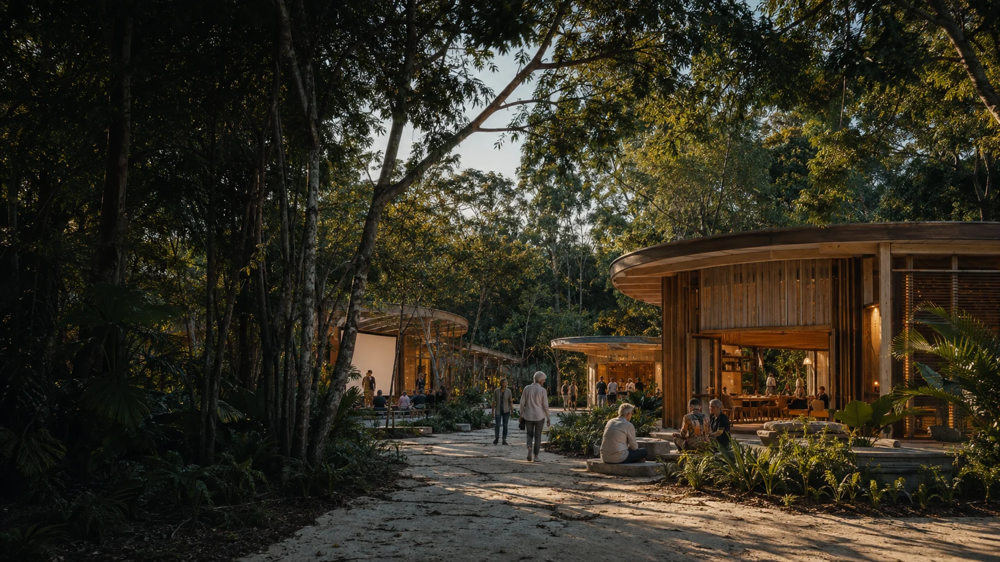

Earlier title research
The local source material records Lot 23SL3665, an area of 13,689 square metres and an Anglican diocesan entity as the registered owner at the time of that search.

Earlier property research and a supplied map are being used to explore a longevity, wellbeing, research, learning, art, science and technology concept. No property arrangement has been proposed to the title holder.
The title research and supplied map measurement are close but not identical. Both are working references, not a new survey.


The local source material records Lot 23SL3665, an area of 13,689 square metres and an Anglican diocesan entity as the registered owner at the time of that search.
The same material records a Community Facilities designation and CF5 precinct. The date and current planning details still need verification.
The local source material says an older church was moved to this property after erosion affected its former location. It later deteriorated from termites and was removed.
The concept is broader than a clinic. It brings carefully governed health work into contact with learning, creativity and community use.
Assessment, movement, learning, specialist equipment and research pathways across healthy ageing, cognition and reablement.
Person and place research using longitudinal health, experience and environmental information only through suitable consent and governance.
Studios, experiments, public learning, film, space-weather simulation and cross-disciplinary residencies.
Film, talks and visible research translation offer a bridge between specialist work and island community life.
Donation, lease or another arrangement could be discussed only if the title holder wished to explore it.
The title holder would determine whether any transfer, lease, partnership or other path enters discussion.
A community wealth or mutual structure could hold the asset for an agreed island-serving purpose.
Property, service delivery, research and community relationships would each need their own terms.
Current property facts, title details, the title holder's interest and any preferred asset structure require confirmation.